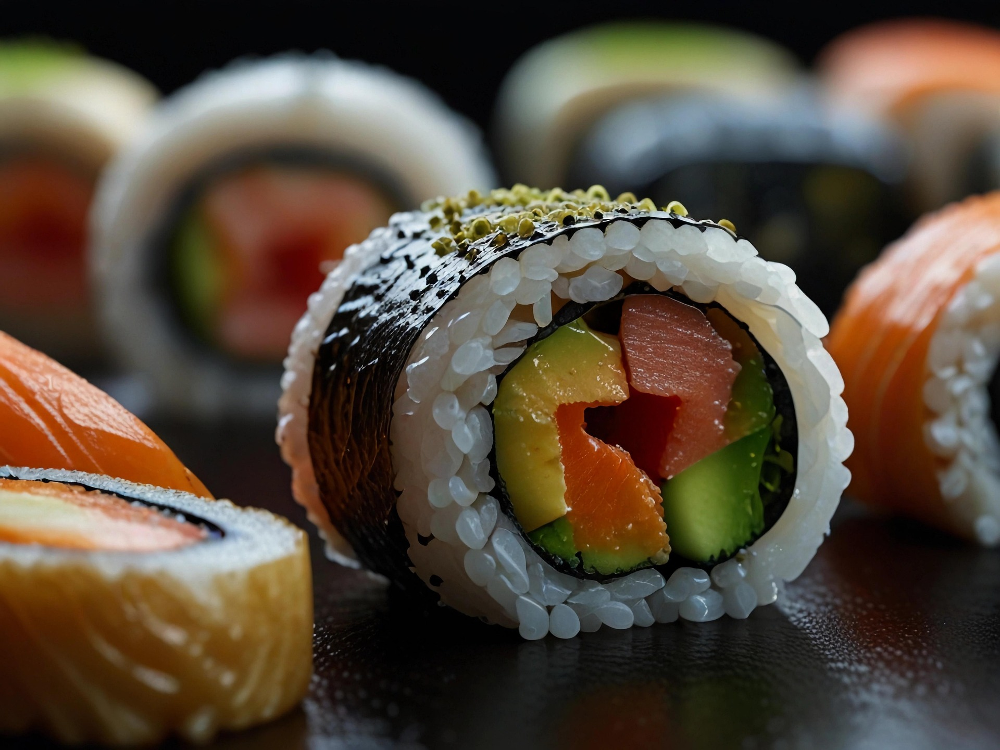
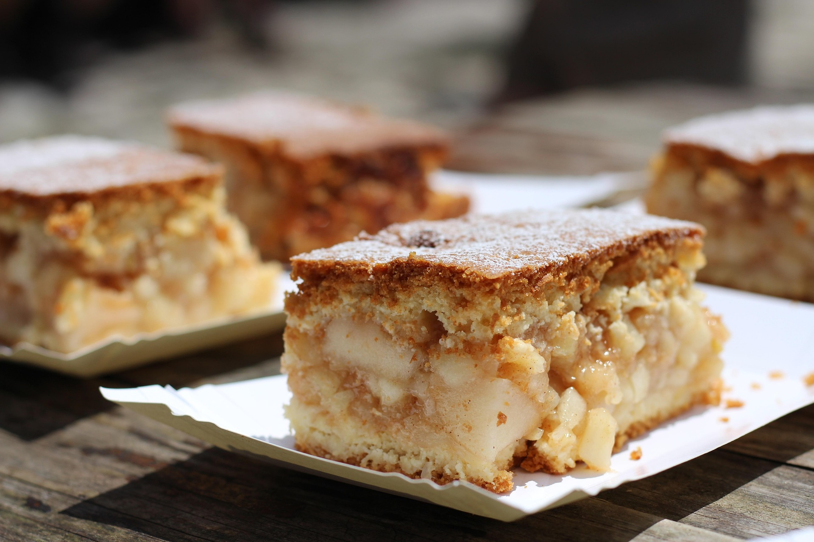
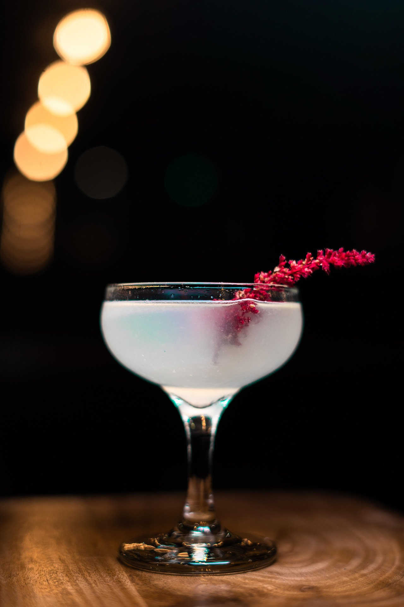
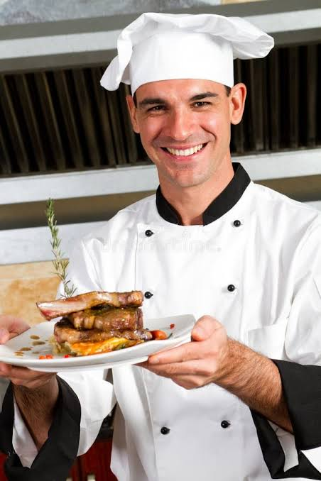

Repostería
María Fernanda
Transformó su pasión por la pastelería en un emprendimiento de productos artesanales.
“Aprendí técnicas que hoy aplico todos los días en mi negocio.”
Formamos profesionales en cocina, repostería y coctelería mediante una enseñanza práctica, creativa y orientada al mundo laboral.

Técnicas culinarias, manipulación de alimentos y cocina internacional.

Tecnica de repostería, manipulación de alimentos y cocina internacional.

Tecnicas de cocteleria y manejo de bar, manipulación de alimentos y cocina internacional.
Formación práctica para convertir el talento y la pasión en nuevas oportunidades.
Transformó su pasión por la pastelería en un emprendimiento de productos artesanales.
“Aprendí técnicas que hoy aplico todos los días en mi negocio.”

Completó su formación y dio el siguiente paso hacia una carrera en cocina profesional.
“La práctica y el acompañamiento hicieron la diferencia.”

Descubrió nuevas herramientas para crear experiencias memorables detrás de la barra.
“Ahora tengo la confianza para ofrecer un servicio profesional.”
Avenida Guayana, Calle 1, sector “C”, Quinta N.º 1, frente a la Escuela de Artes Plásticas.
San Cristóbal 5001, Táchira, Venezuela
Abrir ubicación en Google Maps